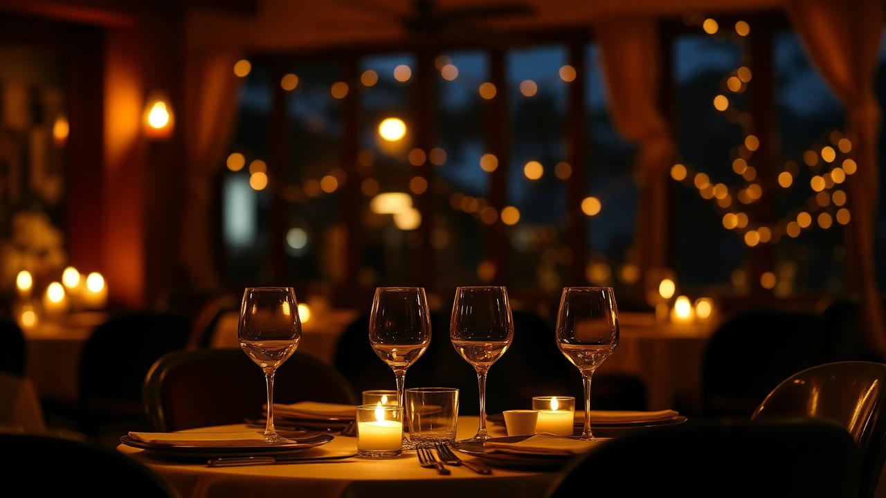
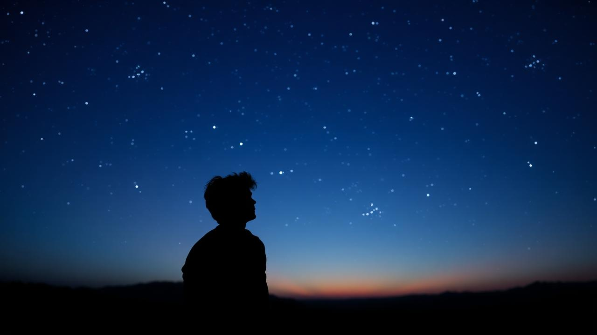

Наш вечер
Дата знакомства: 20 октября 2025 года

Это была одна из сложных недель, когда у меня в жизни происходило много странных вещей.
Я шел на встречу с тобой ближе к ночи, совершенно не готовый к тому, что происходило дальше.
Моя цель была проста: коктейль и немного отвлечься.
Ты появилась — красивая, умная, с лёгкой загадкой в глазах. Мы объездили четыре места и еще больше посмотрели,
всё оказалось закрыто, и я уже думал, что вечер провален. Но мы выкрутились и поехали в «Tartufo».
Там началось настоящее волшебство. Мясо, вино, финики — но больше всего меня захватила ты.
Та сторона тебя, которая разбирается в вине, умеет наслаждаться едой и знает столько всего интересного.
Я захотел провести с тобой этот вечер как можно дольше, чтобы он никогда не заканчивался.
Позже, ближе к одиннадцати, мы отправились в Library Bar. Там вечер окончательно перестал быть просто вечером.
Мы пили, смеялись и с какой-то редкой искренностью рассказывали друг другу о себе — со страстью, с интересом, без спешки.
Мы говорили обо всём: о том, что было, о том, что есть, и даже о том, что, возможно, никогда не случится.
Ты сняла каблуки — и в тот момент я растаял, мне неважно было ничего, я ловил каждое слово, каждое мгновение.
А дальше время будто потеряло форму. Мы продолжали быть вместе — гирос, приставка, лабубу, стихи, пение в машине,
смех между фразами и тишина, в которой всё было понятно без слов. Утром я проснулся рядом с тобой и понял,
что всё произошедшее — лишь малая часть того времени, которое невозможно описать словами.
Мы разговаривали обо всём и ни о чём, смеялись, делились мыслями. Ничего не случилось, но если оглянуться на тот день —
он стал началом чего-то удивительного.
Закрыть
Дружба и моменты

Ты открыла мне мир, который стал особенным: любимый бар с чудесными людьми, смехом и разговорами до раннего утра, где мы обсуждали всё, что только могло прийти в голову. Каждая встреча была живой, спонтанной и полной радости — такой, которую не всегда можно выразить словами.
Я терялся в этих чудных мгновениях, и мне просто хотелось дарить тебе улыбку, видеть твою радость и любоваться тем, как она появляется.
В те трезвые мгновения наши поездки были по-настоящему чудесными — тёплыми и живыми. Время теряло смысл, как и дела, ожидавшие нас утром. Мы просто ехали, наслаждаясь настоящим.
Долгая дорога в горы пролетала незаметно, наполненная ощущениями, а редкая тишина была удивительно уютной. И так было всегда.
В тот вечер, когда мы поехали в Пафос, многое стало иначе. Время, проведённое с моими друзьями, было прекрасным, но когда мы пришли в ресторан — ты раскрылась по-другому, с той стороны, о которой раньше лишь говорила: тёплой и заботливой.
Наверное, в тот момент мне уже казалось, что я где-то между… Я словно посмотрел на тебя под другой призмой.
То, что происходило между нами, было странно близко к тому, как живут давние влюблённые — умеющие радоваться каждому моменту, ловить смех, касаться взглядом, понимать без слов. Но мы были друзьями.
Друзьями, но не просто — настоящей дружбой между девушкой и парнем, которая может появиться только после долгого, постепенного узнавания друг друга, когда доверие и интерес становятся чем-то почти телесным.
В этой дружбе было всё: тепло, лёгкая боль, открытость и уважение границ, смех до слёз и молчание, которое не тянуло за собой неудобства, а наоборот — делало моменты ярче.
Это была дружба, которая оставляет следы, даже когда время и расстояние пытаются их стереть.
Закрыть
Мои мысли

Я попытался быстро и кратко описать нашу маленькую историю, понимая, что она могла закончиться в один день…
а могла только начинаться. Когда всё казалось решённым, ты снова взяла поводья в руки и решилась на игру —
ту самую, в которую я охотно включился, не думая о том, что это может быть больно и странно одновременно.
В тот момент мне стало страшно — когда тебя охватил срыв, дыхание сбилось, и мир вокруг заискрился тревогой.
Я не знал, сможешь ли ты собраться, удержаться на ногах и справиться с собой. Только сейчас, когда пишу это,
я понимаю: ты сильнее и удивительнее, чем позволяешь увидеть внешнему миру.
В груди тепло и благодарность. Потому что я видел человека, способного держать себя в руках, когда кажется,
что всё рушится — и это была именно ты.
Сейчас, понимая, что правила игры далеки от идеальных и что результат может быть горче самого тёмного шоколада,
мне хочется подарить тебе улыбку — маленькую, лёгкую, ту самую, которая внезапно появляется, когда мир становится
чуть ярче и теплее.
В глубине души я знаю: то, что ты делаешь, может вернуться к тебе с тройной силой. И, понимая, что это работает
и в плюс, и в минус, я почти все секунд хотел ощущать это рядом с собой. Но это не фундамент нашего мира,
и вряд ли всё будет происходить так, как я мысленно представляю — мгновение за мгновением. Терпение и силы —
вот что творит чудеса.
Проживая заново эти моменты, я словно прохожу их заново, и сложно писать без эмоций: где-то пробегают излишние
чувства, которые ты можешь воспринять как ИУ/ФЕ.
Но в этом есть своя правда — я не знаю, какой выбор сделаю в итоге, и постоянно думаю о том,
что вероятность того, что мы выберем одинаковый ответ, всего 33%, а что выберем разные — целых 66%
Прошу лишь одного: не воспринимать строго то, что увидишь, прочитаешь или услышишь. Всё это — лишь попытка зафиксировать мгновения, которые мы прожили вместе, с их теплом, страхом, смехом и лёгкой тревогой.
Под конец игры я подготовил три разных «уголка», которые, на мой взгляд, смогли бы отразить мои пожелания к тебе относительно каждого варианта. Все они разные — с разным смыслом и посланием.
Закрыть
Это тебе
Эта страница — не форма обратной связи и не призыв к действию. Это маленький подарок, цифровой уголок, который я создал специально для тебя. Здесь нет кнопок «Отправить» и полей для заполнения — просто пространство для наблюдения и вдохновения.
С формальностями мы закончили. Ты сама поймёшь, что это за штука и зачем она может понадобиться, когда перейдёшь на сайт. Это не полноценный путеводитель и не готовый маршрут, скорее — маленькое окно, через которое можно заглянуть в будущее путешествие.
Иногда достаточно просто взглянуть сверху, чтобы прочувствовать место: увидеть улицы, тени, расстояния между точками и жизнь, которая там течёт каждый день.
Этот проект — набор точек на карте, собранных для тебя. Это не рекомендация, а возможность спокойно рассмотреть детали, приблизить, покрутить, задержаться взглядом и вдохновиться.
Открыть место на карте
P.S. Лучше сохрани отдельно ссылку, данная страница скоро пропадет.
Спасибо!
Закрыть